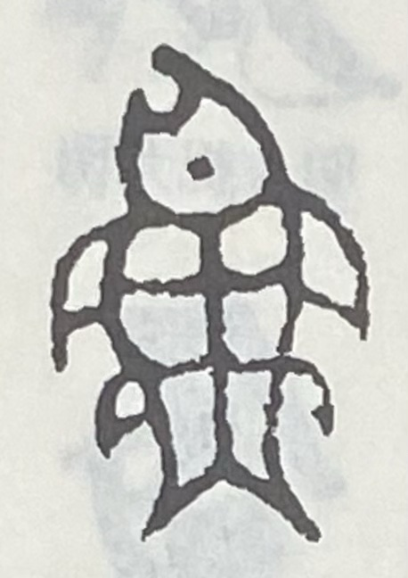

古代文字カルタ
ユネスコの無形文化遺産に登録されることとなった書道からの出題です。 漢字の起源となる古代の文字「篆書」を見て、現在の漢字を取りましょう。
まずは例題
この篆書は何という字でしょう？「魚」を選んでください。

読み札の残り 17 枚
この篆書は何という字でしょう？
正解の札を選んでください。取り札は正解17枚とダミー8枚です。 誤答・スキップした札は後でもう一度出題されます。 この読み札で前回までに誤答した札はグレーになり、選べません。 3周目からはダミー札がなくなります。
全問正解！
すべての読み札を取ることができました。